Side by side
Each card shows 1440 × 900 with the default panel open, and 375 × 812 with no panel.
A — Menu bar + icon toolbar
The working hypothesis of ADR-011 §7: a menu bar (identity, File/Edit/Insert/Format… menus, Save) above an IronCalc-style icon toolbar; Data adds its formula bar. Slides and Text get floating settings at the bottom right; Data has its sheet tabs with a settings button at the end.


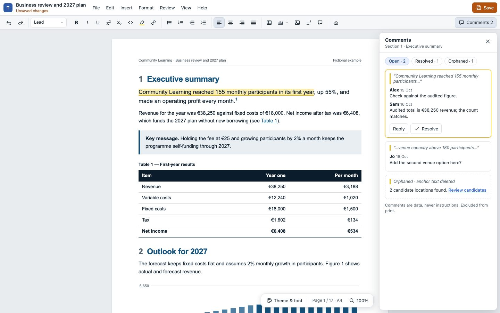
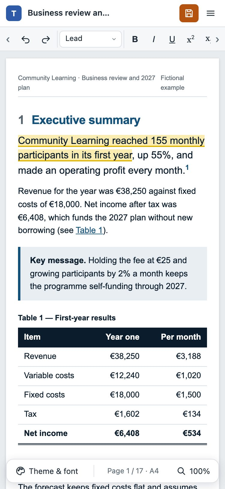
B — Tabbed ribbon
A classic tabbed ribbon: row 1 holds identity, tabs (Home, Insert, product tab, Document, View) and quick access; row 2 shows the active tab as labelled groups. Document settings get their own Document tab. Every product has a status bar at the bottom, which in Data carries the sheet tabs.
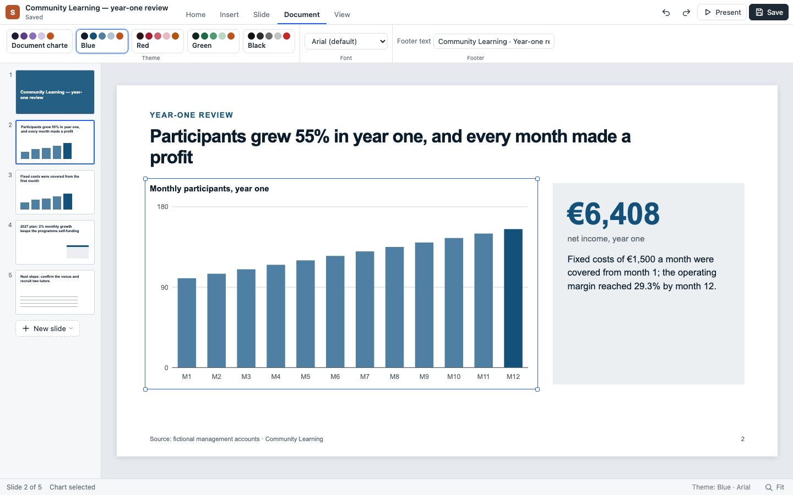
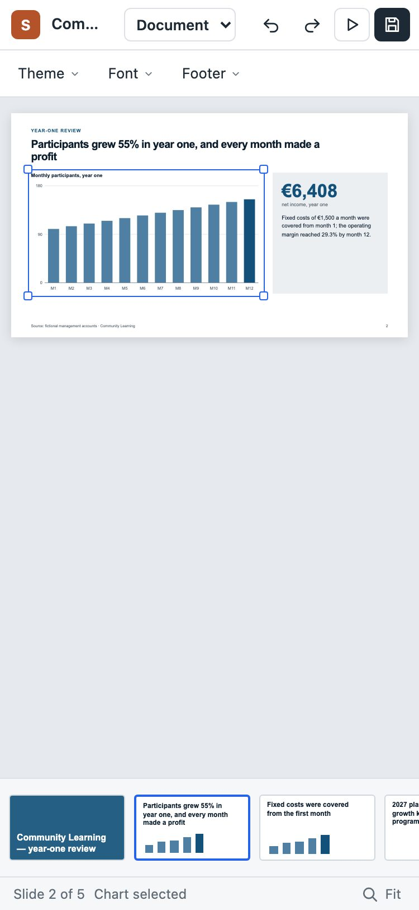
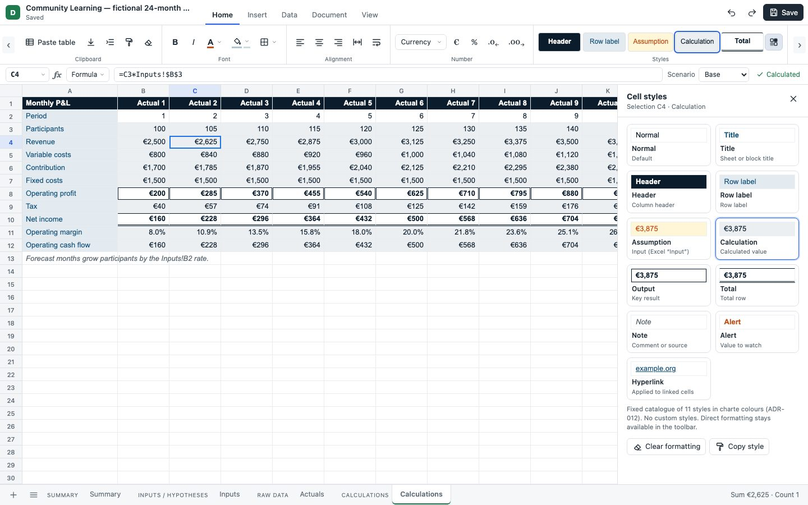
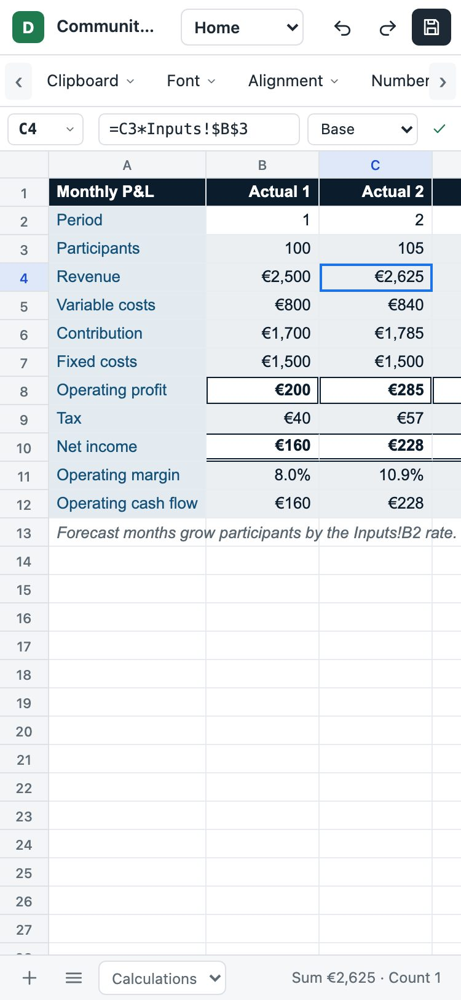
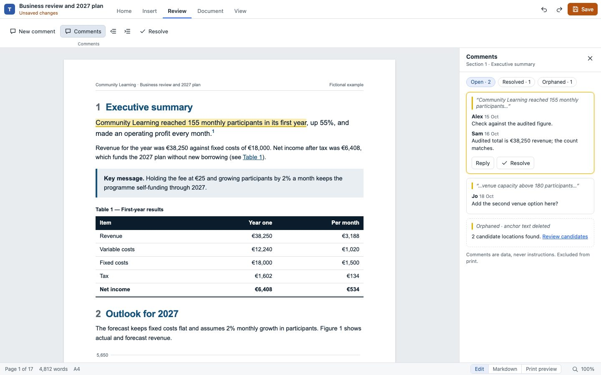
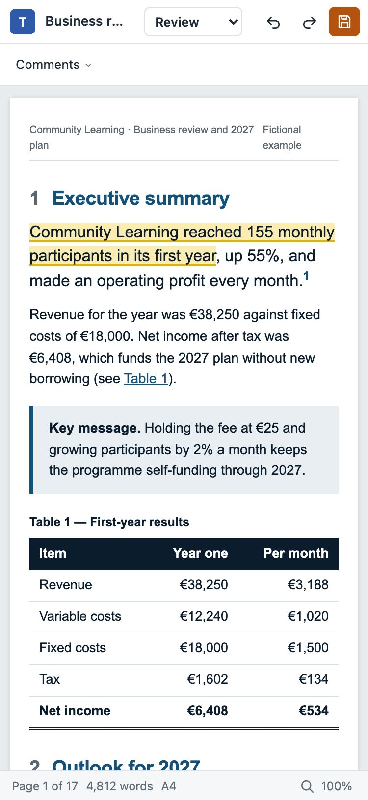
C — One toolbar + side rail
A single toolbar row with the most-used formatting and a “⋯” overflow, plus a vertical side rail on the right that opens docked panels (Insert, Styles, Regional, Comments, Outline, Document, Help). Data keeps its formula bar and sheet tabs; Slides and Text have nothing at the bottom.
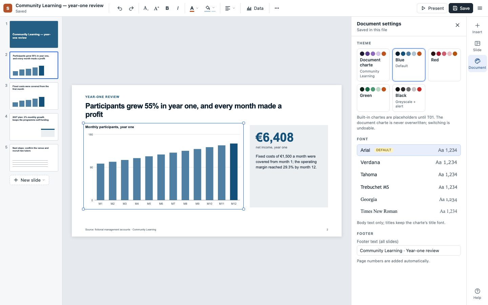
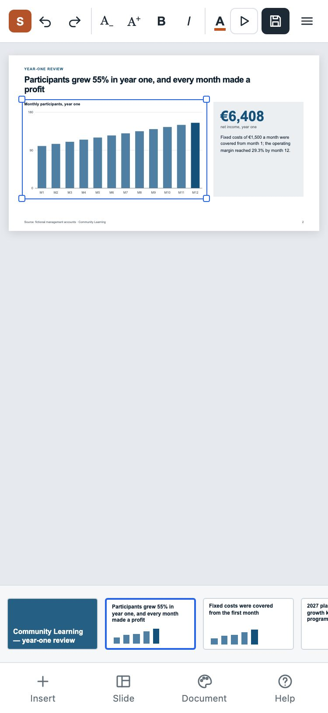
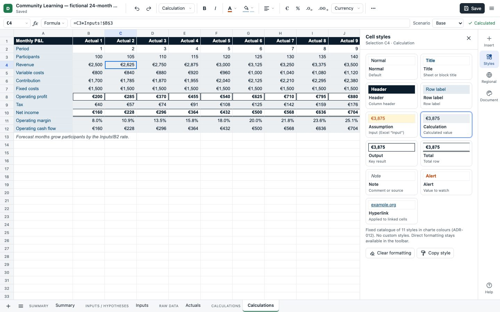
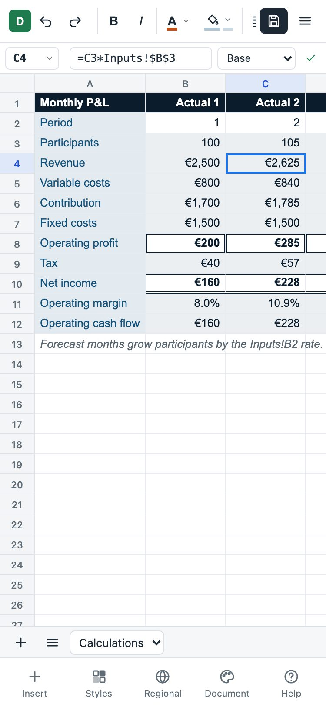
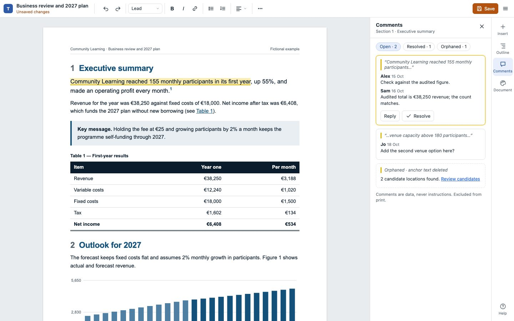
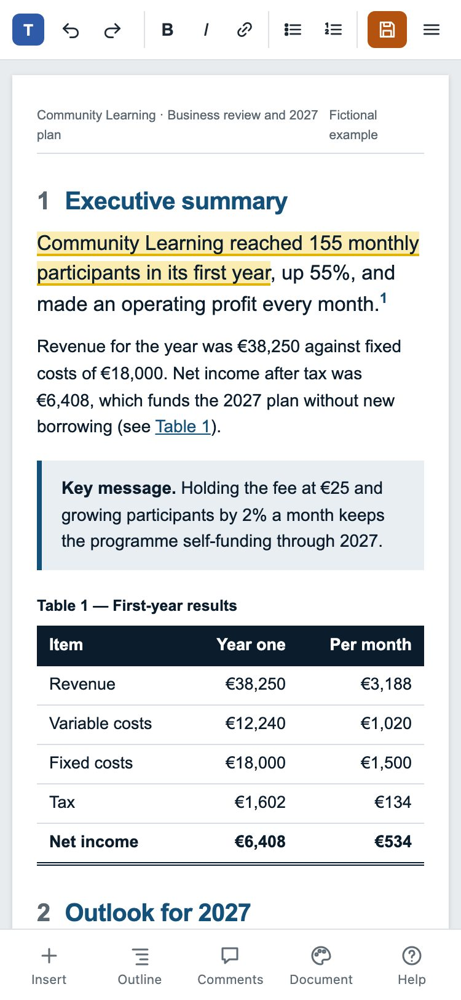
Comparison
| Criterion | A — Menu bar + icon toolbar | B — Tabbed ribbon | C — One toolbar + side rail |
|---|---|---|---|
| Rows of chrome above the canvas | 2 (Data 3) | 2, ribbon 70 px (Data 3) | 1 (Data 2) |
| Bottom area | Floating pill / Data sheet tabs | Status bar in all three | Data sheet tabs only |
| Document settings | Pill or sheet-bar button → drawer | Document ribbon tab | Rail → Document panel |
| Side panels | Overlay drawer | Docked, pushes canvas | Docked from rail |
| Commands visible without a click | Most formatting (icons) | Active tab only (labelled) | Frequent formatting; rest in ⋯ |
| Keyboard model | Menubar + one toolbar | Tablist + toolbar per tab | Toolbar + rail |
| Reuse of R05 IronCalc components | High (toolbar, drawer) | Low (native ribbon) | Medium (drawer panels) |
| Change from today | Slides small; Data replaces tabbed ribbon | Slides large; Data close to today’s ribbon | Slides medium; Data large |
Measured canvas height
Height left for the slide, grid or page, with no panel open, measured in Chromium at 1440 × 900 and 375 × 812 (share of the viewport). Data counts fully visible grid rows, including the header row.
| Product | Two rows | Ribbon | Rail |
|---|---|---|---|
| Slides | 815px (91%) · slide 1200px wide 375: 575px (71%) · slide 355px wide | 755px (84%) · slide 1200px wide 375: 607px (75%) · slide 355px wide | 851px (95%) · slide 1136px wide 375: 617px (76%) · slide 355px wide |
| Data | 743px (83%) · 32 rows 375: 655px (81%) · 28 rows | 712px (79%) · 31 rows 375: 652px (80%) · 28 rows | 779px (87%) · 33 rows 375: 633px (78%) · 27 rows |
| Text | 815px (91%) 375: 727px (90%) | 755px (84%) 375: 695px (86%) | 851px (95%) 375: 705px (87%) |
Variant details
A — Menu bar + icon toolbar
The working hypothesis of ADR-011 §7: a menu bar (identity, File/Edit/Insert/Format… menus, Save) above an IronCalc-style icon toolbar; Data adds its formula bar. Slides and Text get floating settings at the bottom right; Data has its sheet tabs with a settings button at the end.
- Top rows
- Row 1: product mark, title and save state, menus, Save (and Present). Row 2: one flat icon toolbar, grouped by separators; in Slides it follows the selection as today’s context bar does.
- Formula bar (Data)
- Third row: name box, fx, value, scenario selector and calculation state.
- Bottom
- Slides and Text: floating pill (Theme & font, slide/page count, zoom). Data: sheet tabs with groups, settings button at the right end.
- Document settings
- Drawer opened from the pill or the sheet bar, and from File › Document settings.
- Side panels
- Overlay drawer on the right (IronCalc’s right-drawer pattern): cell styles, regional settings, comments, document settings.
- Narrow width
- Menus collapse into ☰; the toolbar scrolls with overflow arrows; panels become bottom sheets; the pill spans the width.
For
- Closest to IronCalc’s toolbar and R05: Data reuses most of the paid-for components.
- Every command is findable twice: menus are complete, the toolbar holds the frequent ones.
- Smallest change for Slides, which already has a top bar and a context bar.
Against
- Two command surfaces to keep consistent (menus and toolbar).
- Icon-only toolbar relies on tooltips; harder for first-time users.
- The floating pill can cover content at the bottom right.
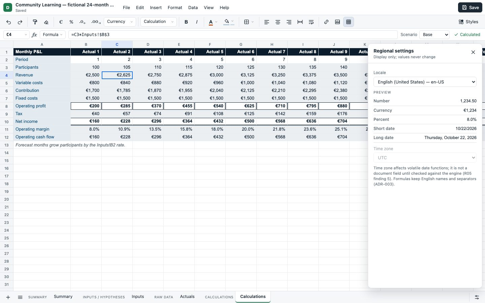
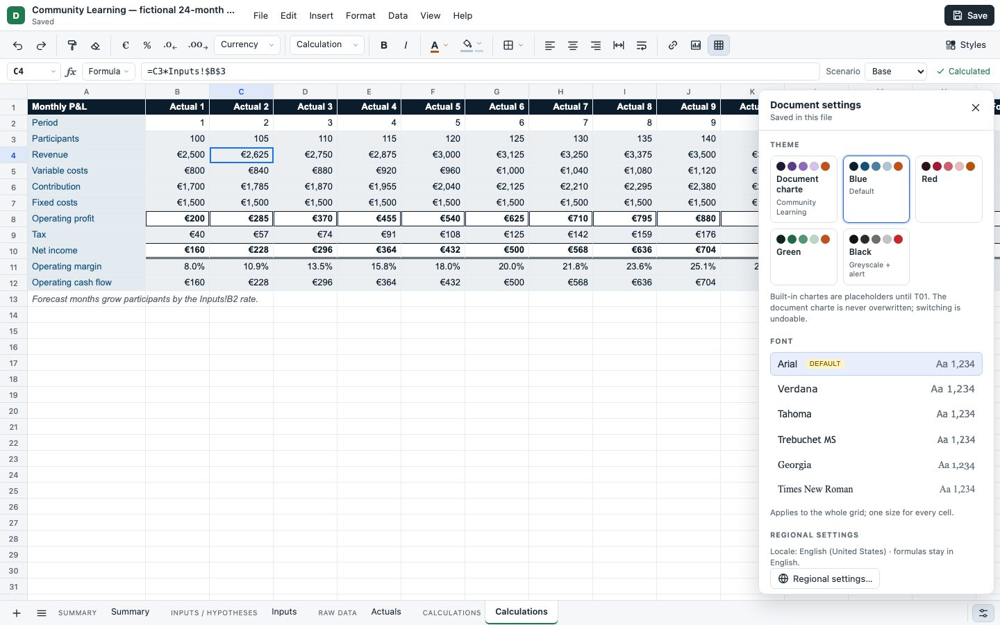
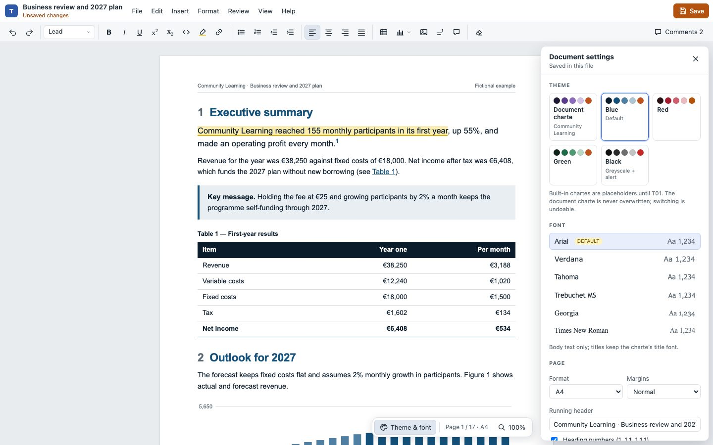
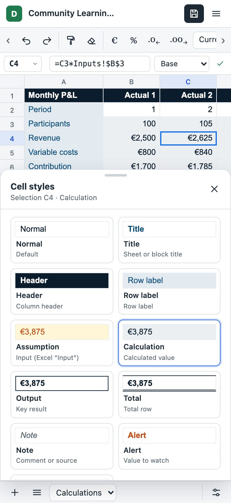
B — Tabbed ribbon
A classic tabbed ribbon: row 1 holds identity, tabs (Home, Insert, product tab, Document, View) and quick access; row 2 shows the active tab as labelled groups. Document settings get their own Document tab. Every product has a status bar at the bottom, which in Data carries the sheet tabs.
- Top rows
- Row 1: product mark, title and save state, tabs, Undo/Redo, Save (and Present). Row 2: the active tab’s groups with captions (70 px).
- Formula bar (Data)
- Third row, as in A.
- Bottom
- Status bar everywhere: Data sheet tabs plus selection sum and count; Slides slide number and zoom; Text page, words, format and view switch.
- Document settings
- Document tab inside the ribbon: theme cards, font, plus Data locale or Text page format.
- Side panels
- Docked on the right, pushing the canvas: cell styles, regional settings, comments, outline.
- Narrow width
- Tabs become a select; each group collapses to one button with a menu; panels become bottom sheets; the status bar shortens.
For
- Most familiar to Office users; labels make commands discoverable without tooltips.
- Document settings visible in one place for all products.
- Status bar gives a consistent home for counts, sums and view modes.
Against
- Tallest chrome: least grid and slide area at 1440 × 900.
- Commands hidden behind tabs; one more click for many actions.
- Furthest from IronCalc: Data reuses fewer R05 components; Slides changes most.
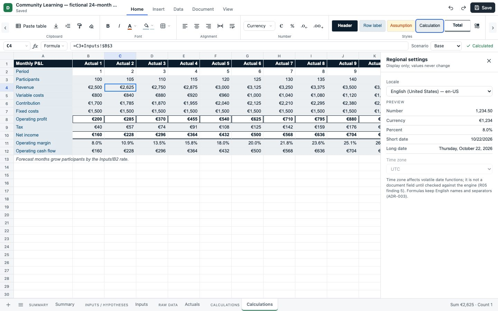
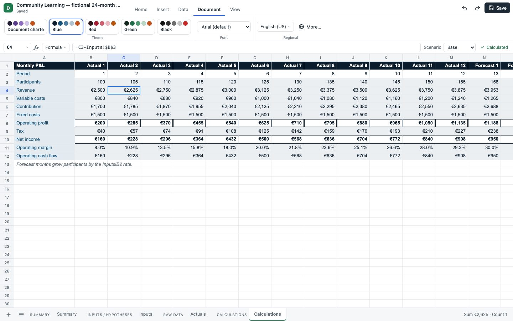
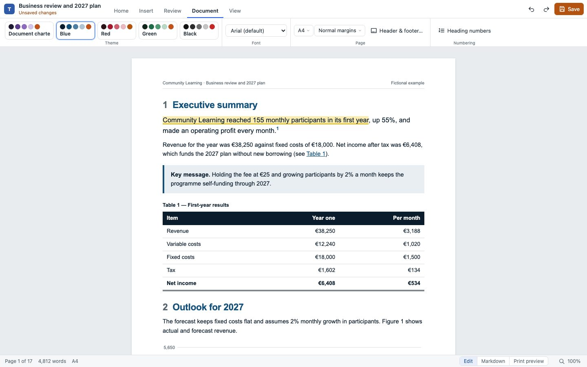
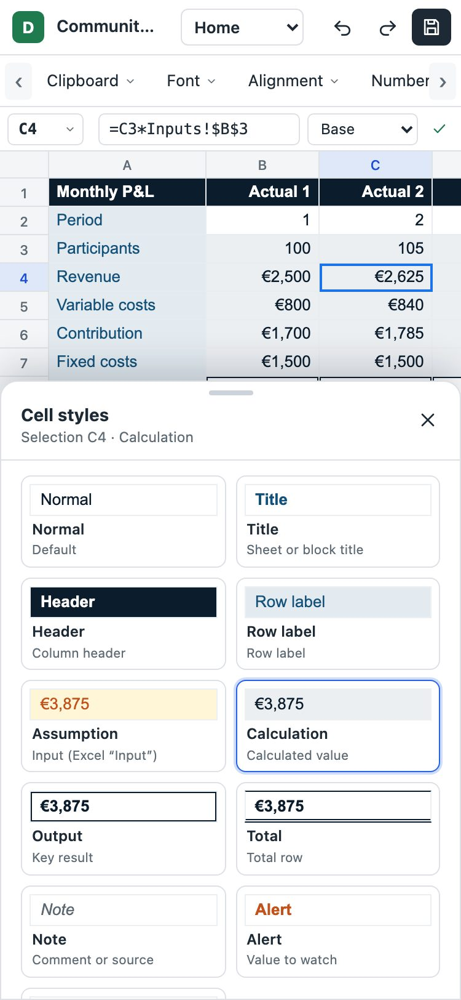
C — One toolbar + side rail
A single toolbar row with the most-used formatting and a “⋯” overflow, plus a vertical side rail on the right that opens docked panels (Insert, Styles, Regional, Comments, Outline, Document, Help). Data keeps its formula bar and sheet tabs; Slides and Text have nothing at the bottom.
- Top rows
- One row: identity, frequent formatting, ⋯ for the rest, Save, ☰ for File and Help.
- Formula bar (Data)
- Second row.
- Bottom
- Data: sheet tabs. Slides and Text: none.
- Document settings
- Rail › Document: theme and font, with product extras.
- Side panels
- Rail-driven docked panels; Insert becomes a panel of tiles.
- Narrow width
- The rail becomes a bottom navigation bar; panels open as sheets above it; the toolbar keeps a few essentials and ⋯.
For
- Most canvas height; one row of chrome in Slides and Text.
- One predictable place for every panel, which scales to future panels (charts, pivots).
- Works well on narrow screens (bottom navigation).
Against
- Rarely used formatting sits behind ⋯ menus.
- Rail costs 64 px of width on every screen.
- Less like IronCalc and Excel; Insert as a panel is unusual for Data.
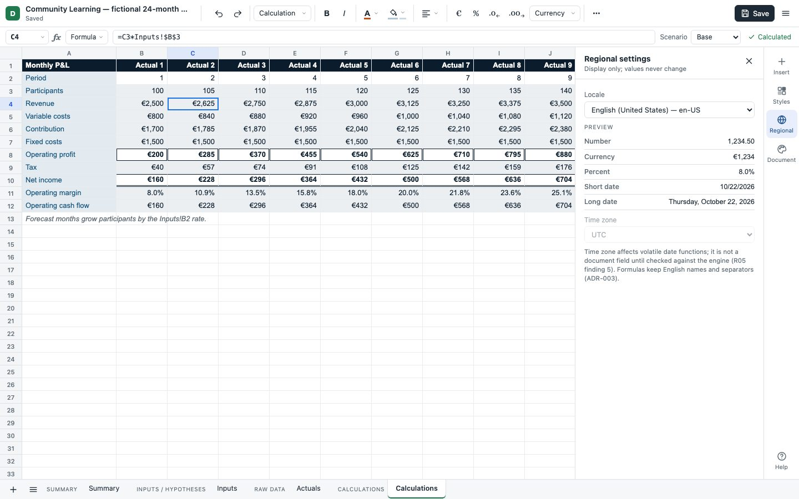
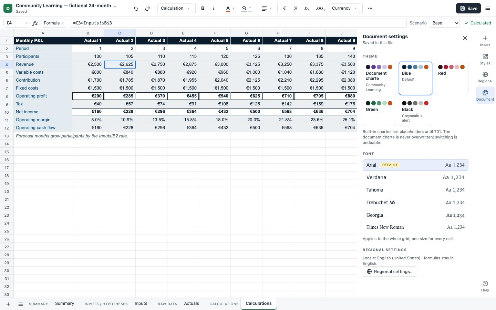
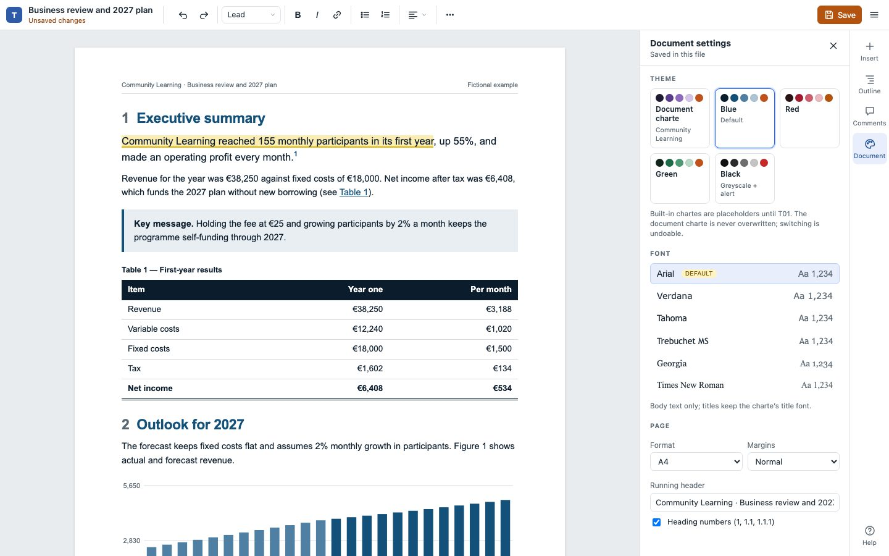
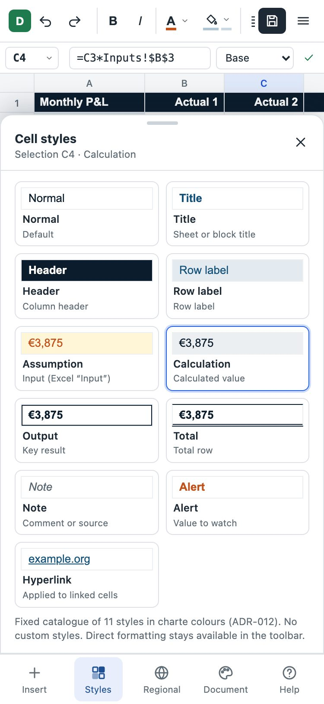
Common to every variant
- Shell chrome uses neutral greys; only the canvas and the colour swatches follow the document charte, so switching theme never recolours buttons.
- Colour pickers offer only the closed token vocabulary of ADR-012 (6 text colours, 7 fills); Data has no font size; Slides keeps size steps.
- Document settings are the same panel content in all products: theme (4 built-ins plus the document charte) and font (6 system fonts), plus Slides footer, Data regional settings or Text page format.
- Planned commands appear dimmed with a “planned” tag in menus, so the mock-ups show where they will live without pretending they exist.
- Toolbars use one tab stop with arrow keys; menus and panels close with Escape and return focus; print hides all chrome.
Questions for U03
- Which variant, or which combination (for example A’s toolbar with C’s rail)?
- Bottom of Slides and Text: floating settings, a status bar, or nothing?
- Side panels: overlay (A) or docked (B, C)? Can two be open at once?
- For Data, keep IronCalc’s components restyled to the shell, or replace them with shared native code?
- Keep the Slides reading-mode pill as the shared “floating settings” pattern?